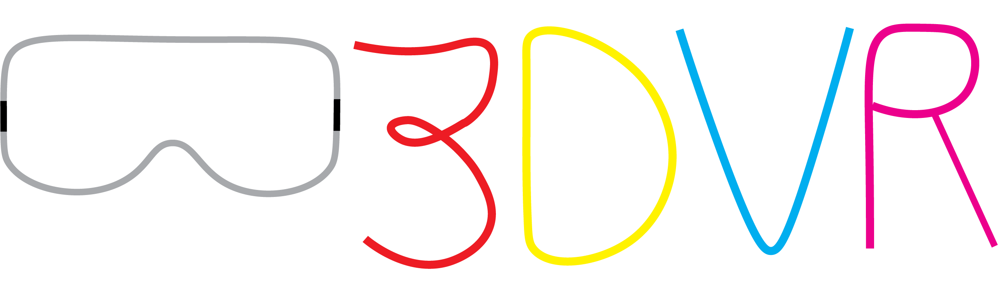

Lead flow
Track new inquiries, quote requests, and next touches before they get buried in calls and texts.

3dvr fits contractors, installers, cleaners, repair operators, and other local service businesses that need faster follow-up, clearer intake, and one operating lane for jobs already in motion.
Best fit when the work is real, the owner is busy, and the main problem is keeping the week organized.
Track new inquiries, quote requests, and next touches before they get buried in calls and texts.
Keep estimates and callbacks moving so leads do not go cold while you are on the job.
Run scheduling, payments, and next actions from one clear desk instead of scattered notes.
New inquiries come in, but the next touch happens too late or not at all.
You are doing real work, so follow-up and scheduling get squeezed to the edge of the day.
Invoices and collection are not attached tightly enough to the work already in motion.
Usually yes. Builder is the right lane when the owner is still close to the work and needs tighter follow-up, scheduling, and payment rhythm.
That is where scoped one-time work helps. We can use Builder as the monthly lane and pair it with a setup sprint when needed.